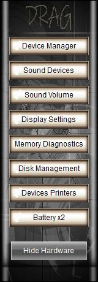
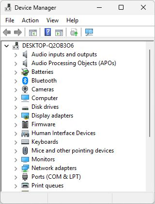
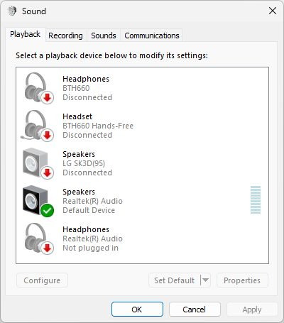
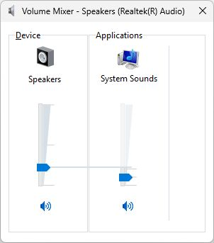
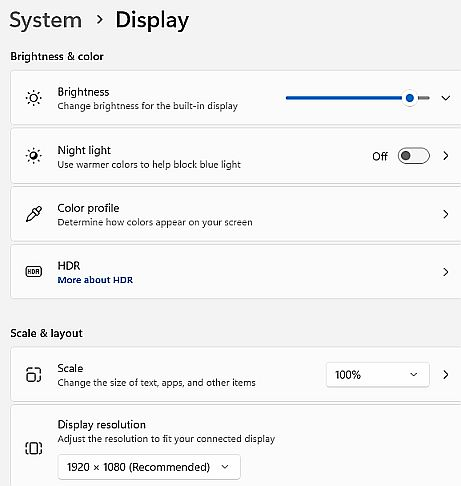
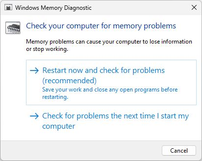
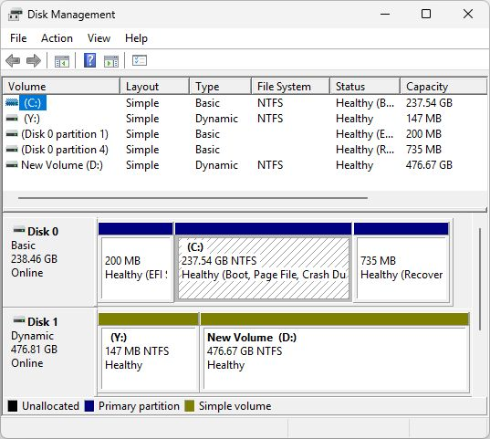
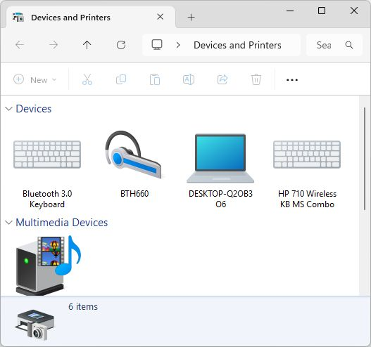
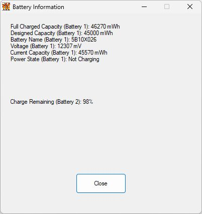

 |
Vics One app TechTool Hardware Window1: Device Manager 2: Sound Devices 3: Sound Volume 4: Display Settings 5: Memory Diagnostics 6: Disk Management 7: Devices and Printers 8: 2x Batteries |
=========================================
Vics One app TechTool 1- Device ManagerView, configure, and troubleshoot all hardware components attached to your computer. You can use it to update device drivers, disable faulty hardware, and check for compatibility issues |
=========================================
Vics One app TechTool 2- Sound DevicesOpens Playback Devices. |
=========================================
Vics One app TechTool 3- Sound VolumeOpens Legacy Sound Controls Click System Sounds Icon in Volume Mixer to uncheck Play Windows Startup Sound and select No Sound in Sound Schemes for smoother performance |
=========================================
Vics One app TechTool 4- Display SettingsFix Brightness - Scale and resolution Setup Multiple displays. |
=========================================
Vics One app TechTool 5- Memory DiagnosticsCheck for Memory ErrorsRequires Restarting Computer Run the built-in Windows Memory Diagnostic To check your RAM for faults and errors, which often cause blue screens or system crashes.  |
=========================================
Vics One app TechTool 6- Disk ManagementDisk Management:Advanced storage operations, such as partitioning drives, extending or shrinking volumes, formatting, and changing drive letters.  |
=========================================
Vics One app TechTool 7- Devices and PrintersConnect to new bluetooth devices, check head phones. etc |
=========================================
Vics One app TechTool 8- Battery x2 |
=========================================